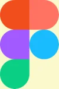
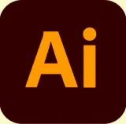
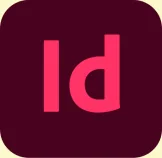
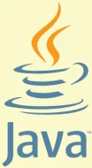
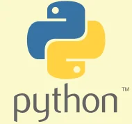
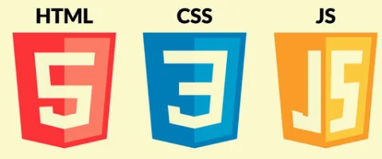
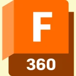
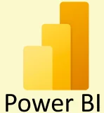
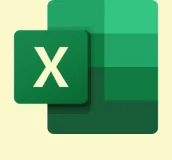

CV
Utdanning
Universitetet i Oslo
Master
Informatikk: Design, bruk, interaksjon
2025-
Master
Informatikk: Design, bruk, interaksjon
2025-
Hva jeg har lært
Fordypet kompetansen innen UX og interaksjonsdesign, med særlig fokus på hvordan mennesker samhandler med digitale teknologier og hvordan teknologi kan støtte nye arbeidsprosesser. Lært om blant annet AI og autonome systemer, plattformøkosystemer, tangible interaction og kvalitative forskningsmetoder. I masteroppgaven min undersøker jeg hvordan lavkodeplattformer kan støtte smidige arbeidsprosesser i kommunal sektor.
Fordypet kompetansen innen UX og interaksjonsdesign, med særlig fokus på hvordan mennesker samhandler med digitale teknologier og hvordan teknologi kan støtte nye arbeidsprosesser. Lært om blant annet AI og autonome systemer, plattformøkosystemer, tangible interaction og kvalitative forskningsmetoder. I masteroppgaven min undersøker jeg hvordan lavkodeplattformer kan støtte smidige arbeidsprosesser i kommunal sektor.
Universitetet i Oslo
Emner på Bachelornivå
Informatikk: Design, bruk, interaksjon
2024-2025
Emner på Bachelornivå
Informatikk: Design, bruk, interaksjon
2024-2025
Hva jeg har lært:
Fått et solid fundament i informatikkens prinsipper, med fokus på utforming, bruk og interaksjon med digitale teknologier. Tilegnet ekspertise innen brukersentrert design, brukbarhetstesting og interaksjonsdesign, og forbedret evnen til å skape intuitive og effektive digitale opplevelser.
Fått et solid fundament i informatikkens prinsipper, med fokus på utforming, bruk og interaksjon med digitale teknologier. Tilegnet ekspertise innen brukersentrert design, brukbarhetstesting og interaksjonsdesign, og forbedret evnen til å skape intuitive og effektive digitale opplevelser.
OsloMet
Bachelor
Produktdesign
2019-2021
Bachelor
Produktdesign
2019-2021
Hva jeg har lært:
Utviklet ekspertise innen designprinsipper, brukersentrert design og prototyping. Tilegnet kunnskap om materialvalg og bærekraftige praksiser. Styrket ferdigheter i problemløsning, teamarbeid og kommunikasjon gjennom praktiske prosjekter, med fokus på å skape innovative og funksjonelle produkter som møter reelle brukerbehov og samfunnsutfordringer.
Utviklet ekspertise innen designprinsipper, brukersentrert design og prototyping. Tilegnet kunnskap om materialvalg og bærekraftige praksiser. Styrket ferdigheter i problemløsning, teamarbeid og kommunikasjon gjennom praktiske prosjekter, med fokus på å skape innovative og funksjonelle produkter som møter reelle brukerbehov og samfunnsutfordringer.
Arbeidserfaring
Universitet i Oslo
Gruppelærer
Nåværende stilling
Gruppelærer
Nåværende stilling
Hva jeg gjør
Gruppelærer i Emnet “IN5620 – Interaction with AI and autonomous systems”. Som gruppelærer fasiliterer jeg Gruppearbeid, preseterer fagstoff og gjør annet administrativt arbeid
Gruppelærer i Emnet “IN5620 – Interaction with AI and autonomous systems”. Som gruppelærer fasiliterer jeg Gruppearbeid, preseterer fagstoff og gjør annet administrativt arbeid
Forsvarsbygg
Summer internship
2026
Summer internship
2026
Hva jeg gjorde
Summer internship i Forsvarsbygg med oppgave der vi skulle forbedre digitalisering på byggeplassen. Gjennom internshipet fikk vi besøke byggeplasser og forsvarsanlegg og utviklet et dashboard som skal hjelpe prosjektledere med å jobbe med kompliserte digitale systemer.
Summer internship i Forsvarsbygg med oppgave der vi skulle forbedre digitalisering på byggeplassen. Gjennom internshipet fikk vi besøke byggeplasser og forsvarsanlegg og utviklet et dashboard som skal hjelpe prosjektledere med å jobbe med kompliserte digitale systemer.
Campusprogrammet ved OsloMet
Førstekonsulent
2023-2025
Førstekonsulent
2023-2025
Hva jeg gjorde
Ansvarsområdene inkluderte utarbeidelse av kartleggingsrapporter, planlegging og ledelse av workshops, gjennomføring av dataanalyse og prosjektledelse. Dette var en heltidsstilling (100 %) i perioden 2023–2024, og gikk over til en deltidsstilling (30 %) fra 2024–2025.
Ansvarsområdene inkluderte utarbeidelse av kartleggingsrapporter, planlegging og ledelse av workshops, gjennomføring av dataanalyse og prosjektledelse. Dette var en heltidsstilling (100 %) i perioden 2023–2024, og gikk over til en deltidsstilling (30 %) fra 2024–2025.
Studentparlamentet ved OsloMet
Læringsmiljø- og internansvarlig
2022-2023
Læringsmiljø- og internansvarlig
2022-2023
Hva jeg gjorde
I denne stillingen hadde jeg ansvar for saker knyttet til studentenes læringsmiljø og for å sikre oppfølging av studentdemokratiet. Arbeidet omfattet også planlegging og gjennomføring av større møter, seminarer og arrangementer, samt samarbeid med universitetsledelsen på ulike nivåer for å forbedre studiehverdagen og studentopplevelsen ved OsloMet.
I denne stillingen hadde jeg ansvar for saker knyttet til studentenes læringsmiljø og for å sikre oppfølging av studentdemokratiet. Arbeidet omfattet også planlegging og gjennomføring av større møter, seminarer og arrangementer, samt samarbeid med universitetsledelsen på ulike nivåer for å forbedre studiehverdagen og studentopplevelsen ved OsloMet.
Kristiansand Dyrepark
Sesongleder
2021
Sesongleder
2021
Hva jeg gjorde
I denne stillingen hadde jeg ansvar for ansatte og den daglige driften av Ekorn Jensen-kaféen i 2021-sesongen. Dette inkluderte å planlegge rutiner, sette opp turnus- og vaktplaner, samt personalansvar.
I denne stillingen hadde jeg ansvar for ansatte og den daglige driften av Ekorn Jensen-kaféen i 2021-sesongen. Dette inkluderte å planlegge rutiner, sette opp turnus- og vaktplaner, samt personalansvar.
Skills
Software

Erfaring med wireframing og prototyping i Figma. Utvikle brukerflyt, lav- og høyoppløselige wireframes, samt interaktive, klikkbare prototyper for testing og presentasjon. Erfaring med samarbeid i designsystemer og overlevering til utvikling.


Grafisk design
Jeg har erfaring med Adobe Illustrator og InDesign for å lage illustrasjoner, rapporter, trykksaker og mønstre for laserskjæring.
Jeg har erfaring med Adobe Illustrator og InDesign for å lage illustrasjoner, rapporter, trykksaker og mønstre for laserskjæring.


Objektorientert programering
Objektorientert programmering i Java og Python utvikling av skript og programvare.
Objektorientert programmering i Java og Python utvikling av skript og programvare.

Front-end utvikling
Grunnleggende front-end utvikler med erfaring i å bygge responsive brukergrensesnitt ved bruk av HTML, CSS og JavaScript. Erfaring med komponentbasert utvikling i React. Kjennskap til verktøy for utviklingsworkflow som npm/yarn og versjonskontroll med Git.
Grunnleggende front-end utvikler med erfaring i å bygge responsive brukergrensesnitt ved bruk av HTML, CSS og JavaScript. Erfaring med komponentbasert utvikling i React. Kjennskap til verktøy for utviklingsworkflow som npm/yarn og versjonskontroll med Git.

CAD / 3D-modellering
Jeg kan modelere i 3D ved bruk av Fusion 360 og lager tekniske skisser, renderinger og filer klare for 3D-print.
Jeg kan modelere i 3D ved bruk av Fusion 360 og lager tekniske skisser, renderinger og filer klare for 3D-print.


Dataanalyse og visualisering
Jeg kan lage visuelle framstillinger og analyser av store datamengder ved bruk av Power BI og Excel.
Jeg kan lage visuelle framstillinger og analyser av store datamengder ved bruk av Power BI og Excel.